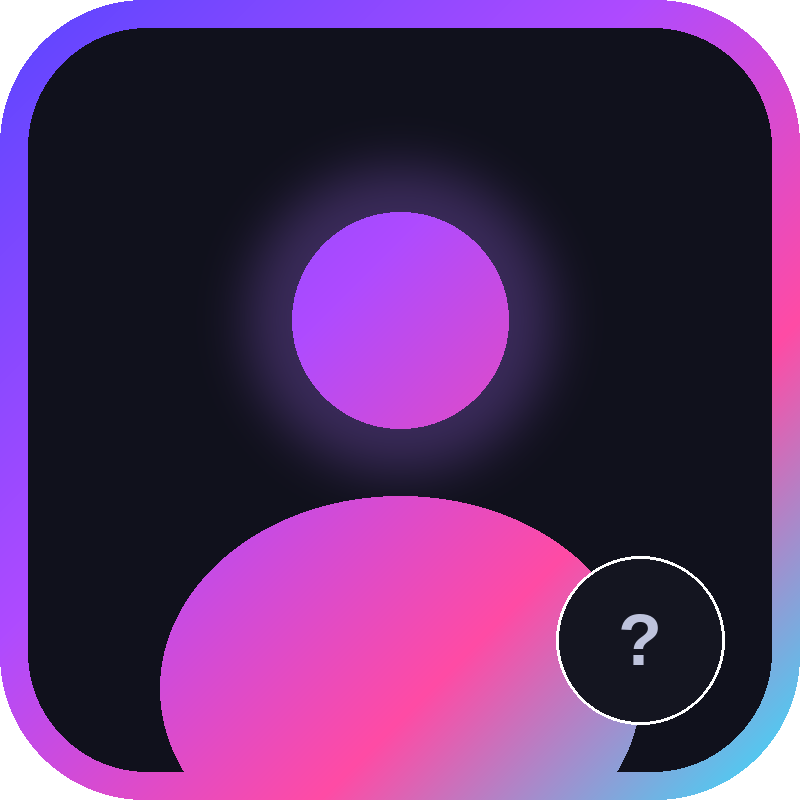

// developer profile

Z-Hiruira's Developer
@Kadokun404 · Fullstack & Bot Developer
Membangun dan merawat ekosistem Z-Hiruira's dari nol — landing page, serverless API, AI integration, sampai WhatsApp bot. Suka ngulik hal baru dan bikin sesuatu yang bisa langsung dipakai orang.
JavaScript / Node.js
Vercel Serverless
REST API Design
WhatsApp Bot (Baileys)
Prompt Engineering
UI / Frontend
Telegram Bot API
∞
uptime ruina
1
AI deployed
🔥
terus diupdate
// source code
Proyek Open Source
Kode dasar Ruina tersedia publik — bisa dipelajari, di-fork, atau dipakai sebagai base buat proyek kamu sendiri. Kalau bermanfaat, kasih star ya!
public
⭐ Star
Base code Ruina — WhatsApp bot berbasis Baileys dengan integrasi AI. Bisa langsung dipakai sebagai starting point untuk bot WA kamu sendiri dengan kemampuan conversational AI.